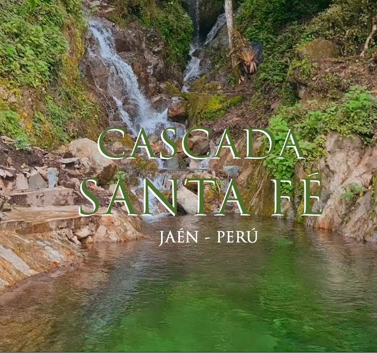
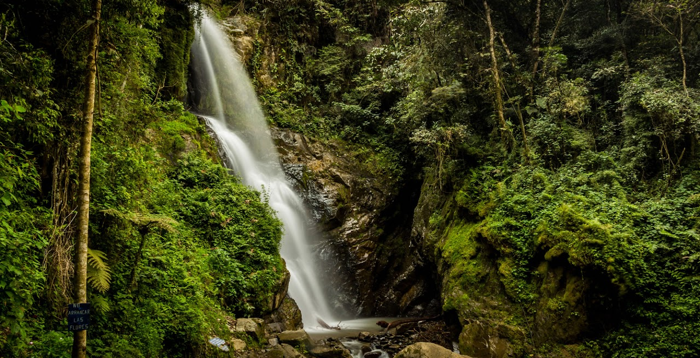
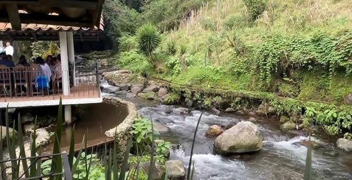
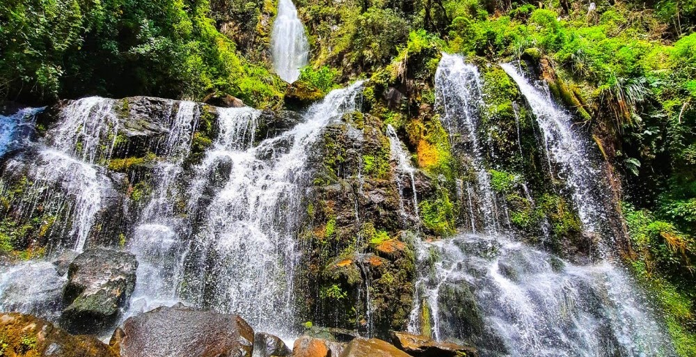

01

Finca
La Arboleda Farm
El punto de partida de la ruta: cafetales a la sombra de árboles altos, con vistas abiertas al valle y el aroma del café recién cortado.
Un recorrido a través de fincas cafetaleras y cascadas escondidas, pensado para quienes buscan naturaleza, tradición y calma lejos del ruido.
Seis paradas conectan el recorrido: fincas donde nace el café y cascadas donde el agua se abre paso entre la montaña. Cada parada tiene su propio ritmo.
El punto de partida de la ruta: cafetales a la sombra de árboles altos, con vistas abiertas al valle y el aroma del café recién cortado.
Una segunda finca familiar donde se conoce de cerca el proceso del grano, del cultivo al secado, guiado por quienes lo trabajan cada día.

A pocos minutos de la finca, una caída de agua rodeada de vegetación densa, ideal para una pausa y una foto junto al agua.

Una caminata corta lleva hasta esta cascada, más amplia que la anterior, con una poza donde el agua se calma antes de seguir su curso.

Un criadero de truchas entre canales de agua fría, donde es posible ver de cerca a los peces y, si se coordina antes, probarlas recién servidas.

El cierre de la ruta: la cascada más alta del recorrido, con un salto de agua blanca que da nombre al lugar. El mejor punto para terminar el día.
Respondemos por correo o WhatsApp para definir fecha, número de personas y el ritmo del recorrido.